Oscillations - In General¶
Evidence of Oscillations¶
A lot of experiments have been done to research on neutrino oscillations. In summary there are three types,
- Solar neutrinos,
- Reactor and accelerator neutrinos,
- Atmospheric neutrinos.
Results of Experiments¶
Difference between masses from data
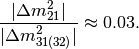
We also have
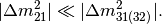
By some convention, people would use numbers so that or 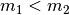.
Determine 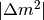 and 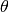¶
The neutrino experimantal data shows the mixing angles are [1]
- ;
- 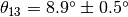;
- 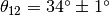.
Experimental result of the :math:` delta m^2 _{ij}`s are [1]
- 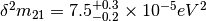;
- 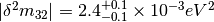.
Definition of Mass-squared Difference
:math:` delta m^2 _{ij}=m_i^2-m_j^2`. Obviously, .
As , we should have .
Atmospheric Results¶
Accelerator Results¶
Reactor Results¶
Vacuum Theory¶
Neutrinos evolve in mass eigenstates. So we need to describe flavour states using mass eigenstates .
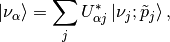
where 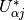 is the element of neutrino mixing matrix.
PMNS Mixing Matrix
Pontecorvo-Maki-Nakagawa-Sakata (PMNS) mixing matrix is the product of three rotation matrices, in addition to an extra phase,

The  is the CP violation phase.
is the CP violation phase.
The origin of the phase is from the fact that we need 4 degrees of freedom for this mixing matrix while a convinient way is to write down the SO(3) rotation matrix then put this extra phase here.
More About Phase of Nutrinos
The mixing of mass eigenstates is
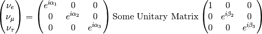
Since the phase of neutrinos can be redefined, we have 3 phases for each flavour and a global phase being arbitary. The first matrix on the RHS can be eliminated. The third matrix on the RHS is not important for neutrino oscillations so it can be neglected. (Proof required)
In ultra relativistic case, we can simply find out the time evolution, which is equivalent to distance evolution,
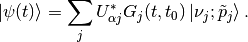
The survival probability means how much neutrinos of a flavour left after some time or distance, which is calculated by
We can see clearly that the survival probability depends on some parameters.
Two Flavour Oscillation¶
To write down this clearly, we need to write down the mixing matrix and propagator. For simplicity, we calculate the example of two flavour (a, b) oscillation.
It’s easier to write down the propagation in mass eiginstates so the first thing to work out is the mixing matrix.
Suppose we have only a flavour neutrino initially,
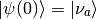
Mixing Matrix¶
The mixing matrix is an rotation of eigenbasis.

Two flavour neutrino mixing diagram with being the mixing angle
The flavour states can be expressed in terms of mass eigenstates,
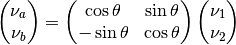
where the matrix
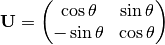
is the mixing matrix which is a rotation of basis geometrically. In other words, this matrix is the representation of the rotation 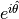.
Survival Probability¶
Neutrinos are usually produced in electron flavor, which we choose as the initial condition for this example,
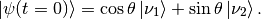
With the mixing matrix, the propagation of an initial state of only flavour a is
To find out the amplitude of flavour a, we need to project the state 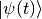 onto a flavour eigenstate, say, ,
The survival probability is the amplitude squared,
![P_{aa} & = \lvert \braket{\nu_a}{\psi(t)} \rvert ^2 \\
& = \lvert \cos^2\theta e^{-iE_1t} + \sin^2\theta e^{-i E_2 t} \rvert^2 \\
& = \left( \cos^2\theta e^{-iE_1t} + \sin^2\theta e^{-i E_2 t} \right)^* \left( \cos^2\theta e^{-iE_1t} + \sin^2\theta e^{-i E_2 t} \right) \\
& = \cos^4\theta + \sin^4\theta + \cos^2\theta\sin^2\theta e^{i(E_1-E_2)t}+ \sin^2\theta\cos^2\theta e^{-i(E_1-E_2)t} \\
& = \cos^4\theta + \sin^4\theta + \cos^2\theta\sin^2\theta e^{i\Delta E t}+ \sin^2\theta\cos^2\theta e^{-i\Delta E t} \\
& = \cos^4\theta + \sin^4\theta + 2 \cos^2\theta\sin^2\theta \cos(\Delta E t) \\
& = (\cos^2\theta +\sin^2\theta)^2 - 2\cos^2\theta \sin^2\theta + 2 \cos^2\theta\sin^2\theta \cos(\Delta E t) \\
& = 1 - 2 \cos^2\theta \sin^2\theta (1 - \cos(\Delta E t)) \\
& = 1 - \sin^2(2\theta) \sin^2\left( \frac{\Delta E t}{2} \right)](_images/math/f94056f45ec04d48a9f07f6c442cf0677669cfbb.png)
with the definition 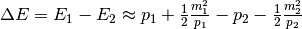. We usually calculate the case 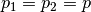 , which takes us to
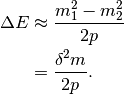
with 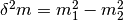. Most of the time we would like to know the oscillation with respect to distance. Using the approximation 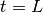 and 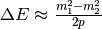, we have
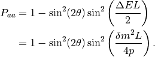
This is the survival probability of flavour a neutrino with an initial state of flavour a.
There are several things to be noticed,
 leads to oscillation free neutrinos.
leads to oscillation free neutrinos.- 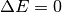 or 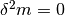 (in the case of same momentum) also gives us no oscillation.
- At 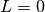 the survival probability is 1, which means no oscillation is done.
Hamiltonian¶
It’s easy to write down the Hamiltonian for the mass state stationary Schrodinger equation. As we have proven, to first order approximation,
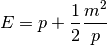
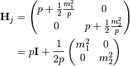
However, the Hamiltonian we prefer is the one for flavour eigenstates. To achieve this, we only need to rotate this previous Hamiltonian using the mixing matrix  .
.
![\mathbf H_{\alpha} & = \mathbf U \hat H_j \mathbf U^T \\
& = \begin{pmatrix} \cos\theta & \sin\theta \\ -\sin\theta & \cos\theta \end{pmatrix} \left( p \mathbf I + \frac{1}{2p}\begin{pmatrix} m_1^2 & 0 \\ 0 & m_2^2 \end{pmatrix} \right) \begin{pmatrix} \cos\theta & -\sin\theta \\ \sin\theta & \cos\theta \end{pmatrix} \\
& = p \mathbf I + \frac{1}{2p} \begin{pmatrix} \cos^2\theta m_1^2 + \sin^2\theta m_2^2 & -\sin\theta\cos\theta m_1^2 + \sin\theta\cos\theta m_2^2 \\ -\sin\theta\cos\theta m_1^2 + \sin\theta\cos\theta m_2^2 & \sin^2\theta m_1^2 + \cos^2\theta m_2^2 \end{pmatrix} \\
& = p \mathbf I + \frac{1}{2p} \begin{pmatrix} m_1^2 - \delta^2 m \sin^2\theta & -\frac{1}{2}\sin 2\theta \delta m^2 \\ -\frac{1}{2}\sin 2\theta \delta m^2 & m_2^2+ \delta m^2 \sin^2\theta \end{pmatrix} \\
& = p \mathbf I + \frac{1}{2p} \left( \frac{1}{2}(m_1^2+m_2^2) \mathbf I - \frac{1}{2}\begin{pmatrix} - \delta m^2 \cos 2\theta & \delta^2 m \sin 2\theta \\ \delta m^2 \sin 2\theta & \delta^2 m\cos 2\theta \end{pmatrix} \right) \\
& = \left(p + \frac{m_1^2+m_2^2}{4p} \right)\mathbf I - \frac{1}{4p}\begin{pmatrix} - \delta m^2 \cos 2\theta & \delta^2 m \sin 2\theta \\ \delta m^2 \sin 2\theta & \delta^2 m\cos 2\theta \end{pmatrix}](_images/math/e59e5e044d0908cf378bfbc82ecbc2f8f1711c92.png)
Again we see clearly, no oscillation will apear as long as mixing angle or 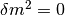.
Note
The reason we can do this is that this mixing matrix is time and space independent. To see this, we first write down the Schrodinger equation for mass eigenstates,
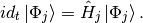
Applying the mixing matrix,
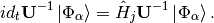
Notice that the mixing matrix, which is a rotation, is orthonormal, 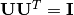. Then we have inverse of this matrix is the same as the transpose.
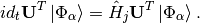
Multiply on both sides and remember the fact that the mixing matrix is orthonormal, we have
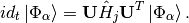
Now we can define the Hamiltonian for flavour states,
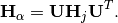
Since Pauli matrices plus identity forms a complete basis for all 2 by 2 matrices, it our Hamiltonian can be written as
Note
Pauli matrices are
In a more compact way,
Equation of Motion in Matter¶
Hamiltonian¶
We have already derived the Hamiltonian for vacuum oscillatioin,
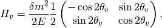
where we would like to define a new matrix,
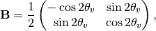
so that the vacuum Hamiltonian can be written as
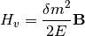
The effect of matter, as we have already discussed before, adds an extra term
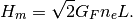
Here we have
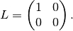
Note
Previously in the MSW effect section, we have 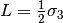. The reason, as explained there, is that we can always write down a 2 by 2 matrix using Pauli matrices and indentity matrix and identity matrix only shifts the overall eigenvalue not the eigenvector so we can just drop the identity term.
One other term is the self-interaction of neutrinos, i.e., neutral-current neutrino-neutrino forward exchange scattering,
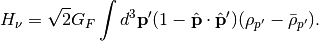
The overall Hamiltonian is
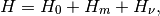
where the vacuum Hamiltonian is
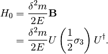
Equation of Motion¶
From the Hamiltonian, Von Neumann equation is
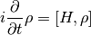
In Picture chapter we have seen the definition of a polarization matrix. The components of a polarization vector (for neutrinos) is given by
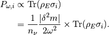
For anitneutrinos, we have a negative  which is defined as 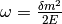 (neutrinos) and (anitneutrinos). The polarization is defined as
which is defined as 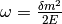 (neutrinos) and (anitneutrinos). The polarization is defined as
With all these definitions, Von Neumann equation multiply by , we have
Notice that Pauli matrices are Hermitian and Unitary, we can alway insert the identity .
Commutator and Cross Product
Commutator of two vectors,
Trace of Pauli Matrices
All Pauli matrices have vanishing trace. And what makes our calculation more convinient is that the trace of matrices is invariant under cyclic permutation, that is
Notice that to have a non-vanishing trace we need . This property really saves our life.
As the definition, we have
Using these we can rewrite the commutator
Multiply by and take the trace, we get,
The corresponding LHS after these work becomes
The Von Neuman equation becomes
We know explicitly what polarization vector is
for neutrinos while
The vectorized Hamiltonian is
Multiply by and take the trace,
that is,
Hamiltonian
The Hamiltonian for homogeneous isotropic environment is
Then the equation we need becomes
where , , .
Q&A¶
Question
What are some of the conventions used in liturature?
Answer
- .
- Flavours of left hand neutrinos are mixing of mass eigen states, .
Question
Why can we use just quantum mechanics on relativistic neutrinos? In principle one should use quantum field theory or at least relativistic quantum mechanics?
Answer
To be answered.
Question
What does the mixing angle mean exactly both in vacuum and matter environment?
Answer
There are several ways to illustrate this.
- Rotation angle in flavour space. For simplicity I use a two component neutrino model.
This is a rotation in a plane with a generator . (Make a figure for this.) + (Write down the 3 components model.)
- Oscillation probability involves this angle too. It is a suppression of the oscillation probability.
- From the view of quantum states, this angle determines how the flavour states are composed with mass eigenstates, i.e., the fraction or probability of each mass eiginstates in a flavour state.
Question
What does wave packet in neutrino oscillation mean?
Answer
To Be Answered.
Question
How would a wave packet spread?
Answer
A Gaussian wave packet would spread or shrink. The key of this spreading or shrinking is the dispersion relation.
For non-relativistic Gaussian wave packet in momentum basis with dispersion relation , the expansion of packet is
Obviously, the RMS width spreads according to group velocity .
However, the situation could be different for a relativistic neutrino.
Question
What will scattering do to a wave packet.
Answer
Momentum transfer for a plan wave case in Born approximation is
Refs & Notes¶
| [1] | (1, 2) Neutrino tomography by Margaret A. Millhouse & David C. Latimer, American Journal of Physics 81, 646 (2013); doi: 10.1119/1.4817314 . |